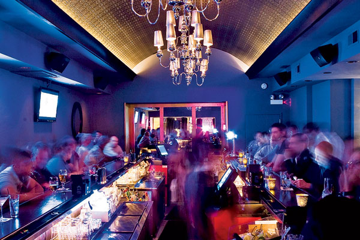
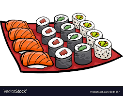
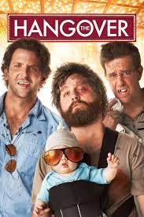

Favorite thing to do on a sunny afternoon?
| Sara loves to lay outside and read on a sunny afternoon. | ||
|  | What is your favorite day of the week? | Sara's favorite day of the week is Friyay! |
| What is your fondest memory of Lehigh? | Sara's freshman year bid day is her fondest memory at Lehigh | |
| If you could have any animal as a pet what would it be? | Sara's dream animal is a Dog of most breeds | |
| Would you rather be stranded in Space or stranded in the middle of the ocean? | If Sara had to choose between being stranded in space or in the middle of the ocena, she would choose the ocean | |
|  | What's your favorite meal to eat and cook? | Sara's favorite meal to eat is sushi, but loves to cook pasta when she's in the mood |
|  | What's the first movie that comes to your mind when you think of movies? | When Sara thinks of a movie, the first thing that comes to mind is the Hangover |
| Are you excited for what this class entails? |
Sara is very happy to take this class, and is excited to see what she can learn from it | |
| Fianlly, what is your major? | Sara's double majoring in Graphic Design and Art History, while minoring in Communications |